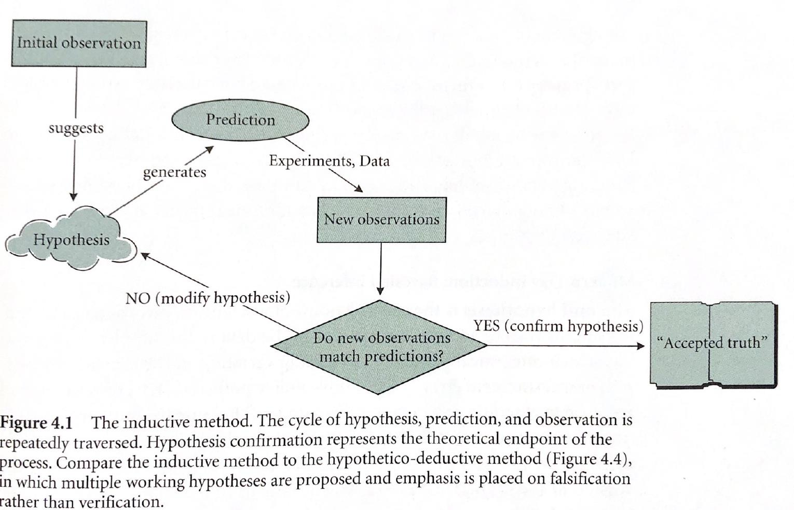
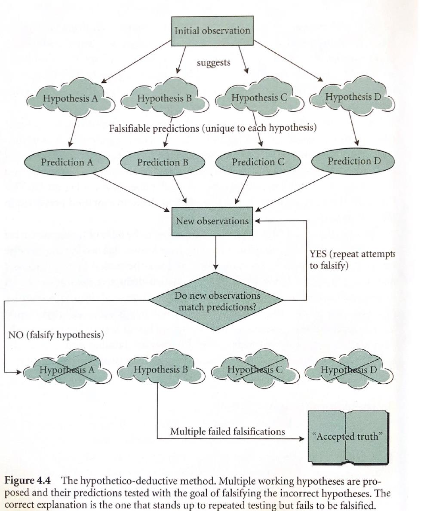

Intro to NRES 710
Welcome!
NRES 710 is designed to be an introductory, graduate-level statistics class. “Introductory” because you are not assumed to have much in the way of prior statistical knowledge (although an undergrad course under your belt will be helpful) or prior experience in R programming (although some prior exposure will make the learning curve less steep). “Graduate-level” because once we get rolling, it’ll be full steam ahead! However, another dimension of a graduate-level course is an emphasis on collaborative knowledge development through group discussion and collective learning, and NRES 710 will provide opportunities for this.
This course provides an introduction to both statistics and computer programming. With a solid grounding in basic rules of probability and statistics, and armed with some basic computer programming abilities (and some human creativity and ingenuity), you can go extremely far in making sense of data and communicating that understanding with others!!
Install R and Rstudio
CRAN website for downloading
R
Rstudio main site
Make sure you have the most recent versions!
Make a new Rstudio “project” for this class
R projects are a useful feature of RStudio. Just store all the code and data for this course in your project folder and it will make your life easier!
Download the R code for this lecture!
To follow along with the R-based lessons and demos, right (or command) click on this link and save the script to your project directory
Why do we need (this particular) stats class?
Many professors recommend that grad students take the least coursework possible and focus on gathering knowledge as needed while conducting their research. But typically, with statistics coursework as a notable exception. It can be more efficient, fun, and rewarding to learn statistics as a group rather than on your own. I hope you agree by the end of this class!
Course Overview
We will discuss the course organization and expectations. Please see course syllabus and schedule documents, provided separately.
What is statistics?
“Statistics is like grout –the word feels decidedly unpleasant in the mouth, but it describes something essential for holding a mosaic in place. Statistics is a common bond supporting all other science.” -Ramsey and Schafer (2013), The Statistical Sleuth, 3rd Edition.

Statistics is the process of making inference about a property of a population (a parameter) from a representative sample. The vertical line separates the stuff we can observe and measure directly (right side) and the stuff we can’t observe but want to make inference about (left side).
Commonly, statistical analysis is conducted to compare parameters from multiple populations (e.g., “are the population means different?”), or to compare parameters estimated from a sampled data set with those of an idealized model representing an underlying hypothesis of interest (or null hypothesis).
More broadly, a common dictionary definition of statistics includes “… the collection, organization, analysis, interpretation, and presentation of data” (Oxford Dictionary, Wikipedia, etc.). Given this broader definition, statistics includes key components of data collection (via study design), data analysis, data science, scientific inference, and science communication.
Different Approaches to “the Scientific Method”
Scientific inquiry is furthered through using both inductive and hypothetico-deductive approaches. Both require statistics in order to test hypotheses about how nature works. The inductive approach involves a continuous and cyclical generation of hypotheses from observations; developing predictions from hypotheses; matching new observations to predictions in order to test hypotheses; and revising hypotheses -until a hypothesis is ultimately confirmed. The emphasis is on hypothesis verification. The hypothetico-deductive approach, on the other hand, proposes multiple working hypotheses from the outset, with an emphasis on falsifying incorrect hypotheses. An “accepted truth” is one that stands up to repeated attempts at falsification. Here is an illustration of the inductive method, taken from Gotelli and Ellison (2004):

And here, an illustration of the hypothetico-deductive method, taken from the same source:

Data are fundamental to science!
All of science is empirical- that is, it relies on data for evaluating the validity of conclusions.
Statistics is fundamental to science because it allows us to better understand what our data can and can not tell us.
What types of data are there?
- Categorical – represents qualitative (labeled) characteristics
- Nominal (> 2 categories)
- Dichotomous (2 categories)
- Nominal (> 2 categories)
- Quantitative
- Discrete: can be counted (number of individuals in a population)
- Continuous: not countable, but can be measured (total body length, temperature)
Why do we need to know about data types? We have to analyze and visualize these data types differently!
For example:
- Nominal data can be visualized with bar plots and pie charts
- Continuous data can be visualized with histograms or scatterplots.
Working with data in R:
Let’s explore some of R’s built in data sets: iris, mtcars, titanic (install titanic package first)
Notes about working in R:
R is an open source project, and new packages are being added all the time.
R is incredibly powerful and feature rich- you are NOT expected to memorize syntax right away, just know that the answer is always a few clicks away!
When in doubt, Google it!!
Here is a base R cheat sheet- this is a great reference for most of the basic tasks you will need to perform in R.
Learn to use R scripts- and save your scripts frequently!! This is the primary record of what you’ve done and allows you and others to reproduce your workflows.
First R demo!
NOTE: for those wishing to follow along with the R-based demo in class, click here for an R-script that contains all the code blocks in this web-based lecture.
All of you should have R and RStudio installed on your computers. See the links page for some useful references. I will be leading workshops on getting started with R in two upcoming Saturday afternoons (Sep 10 and 17)- please consider attending if you don’t have much experience in R!
Starting at the most basic level, R can be used as a calculator. Try it!
# Getting started with R -----------------
# Use R as a calculator
2+2 # use R as a calculator## [1] 4four <- 2+2 # define your first variable!
four## [1] 4five<-2+2 # you can make mistakes and define misleading labels- R will let you!
three <- four + fiveWhat about those hashtags (#) in the above code block? These are ‘comments’ and they are super helpful- use them early and often!
Use Rstudio’s autofill feature to avoid typos!
Explore R’s existing datasets
# R's built in datasets
# data() # 'uncomment' this command and run it to explore built-in datasetsLet’s start by working with Fisher’s famous iris dataset:

#iris # this is a data frame- the basic data storage type in R
head(iris) # [add your own comment here!]## Sepal.Length Sepal.Width Petal.Length Petal.Width Species
## 1 5.1 3.5 1.4 0.2 setosa
## 2 4.9 3.0 1.4 0.2 setosa
## 3 4.7 3.2 1.3 0.2 setosa
## 4 4.6 3.1 1.5 0.2 setosa
## 5 5.0 3.6 1.4 0.2 setosa
## 6 5.4 3.9 1.7 0.4 setosa# tail(iris)
# ?iris # uncomment this to learn more about the iris dataset
# str(iris)
len<-iris$Petal.Length
hist(len) # what does this do? How could you learn more about this 'hist' function?
# Q: what kind of data are petal lengths?Now let’s switch to the ‘titanic’ dataset. To get this dataset you need to install an R package!
#install.packages("titanic") # uncomment this command to install the package- you only need to install once!
library(titanic) # this 'loads' the package and needs to be done every time you run this script
data("titanic_train")
head(titanic_train)## PassengerId Survived Pclass
## 1 1 0 3
## 2 2 1 1
## 3 3 1 3
## 4 4 1 1
## 5 5 0 3
## 6 6 0 3
## Name Sex Age SibSp Parch
## 1 Braund, Mr. Owen Harris male 22 1 0
## 2 Cumings, Mrs. John Bradley (Florence Briggs Thayer) female 38 1 0
## 3 Heikkinen, Miss. Laina female 26 0 0
## 4 Futrelle, Mrs. Jacques Heath (Lily May Peel) female 35 1 0
## 5 Allen, Mr. William Henry male 35 0 0
## 6 Moran, Mr. James male NA 0 0
## Ticket Fare Cabin Embarked
## 1 A/5 21171 7.2500 S
## 2 PC 17599 71.2833 C85 C
## 3 STON/O2. 3101282 7.9250 S
## 4 113803 53.1000 C123 S
## 5 373450 8.0500 S
## 6 330877 8.4583 Q# ?titanic_train # uncomment and run to learn more about the data
# Q: What kind of data are those in the "Embarked" column?
# Q: What kind of data are those in "Pclass?"We can even make our own dataset!
# Make our own data -------------------
# lets pull 15 numbers from the standard normal distribution
a <- rnorm(15)
a <- rnorm(15,mean=2,sd=0.5)
# let's pull 15 numbers from the binomial distribution
b<- rbinom(15, size=1, prob=0.2) # we could "weight the coin"
# we can create categories:
unit<-rep(c("Control","+N","+P","+NP"),each=20)
# we can even create a whole dataframe
my.data <- data.frame(
Obs.Id = 1:100,
Treatment = rep(c("A","B","C","D","E"),each=20),
Block = rep(1:20,times=5),
Germination = rpois(100,lambda=rep(c(1,5,4,7,1),each=20)),
AvgHeight = rnorm(100,mean=rep(c(10,30,31,25,35,7),each=20))
)
head(my.data)## Obs.Id Treatment Block Germination AvgHeight
## 1 1 A 1 1 11.035051
## 2 2 A 2 0 11.059027
## 3 3 A 3 2 9.457404
## 4 4 A 4 3 9.304159
## 5 5 A 5 0 10.026888
## 6 6 A 6 1 9.584460We can also import data from files stored on our computers (or even directly from the web)
# import data from file ----------------------
# Don't forget to set your working directory (or just make sure you're using an Rstudio Project).
# setwd("~/Desktop") # uncomment and run if you want to set the desktop as your working directory.
#Read in the data. Note that the file needs to be in csv format, the name must be in quotes, and the name must include the csv extension.
# Pleach<-read.csv("PbyTime_Bio.csv", header=T) # obvs, this won't work for you because you don't have this file.
# Use your own file to try it out. This is an example! Note: I recommend always using Rstudio Projects. This reduces the hassle of setting working directories. By default the project directory becomes your working directory!
math/bio “stats chats”
Paul Hurtado (math/stats dept), Ken Nussear (geography), Perry Williams (NRES) and I host informal sessions for grad students in EECB, NRES, Geography etc (and faculty) to discuss data analysis questions. This can be a good opportunity to ask questions, find out more about what types of data and questions your peers are working with, and contribute some insights! We haven’t figured out a time yet for this semester, but I’ll keep you posted.
Remember, I need your frequent and honest feedback in order to make sure that the level is appropriate and the topics are useful!